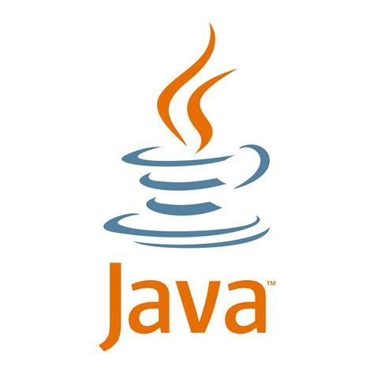
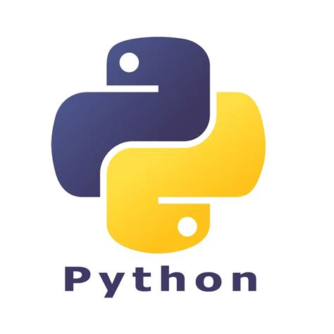
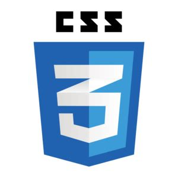
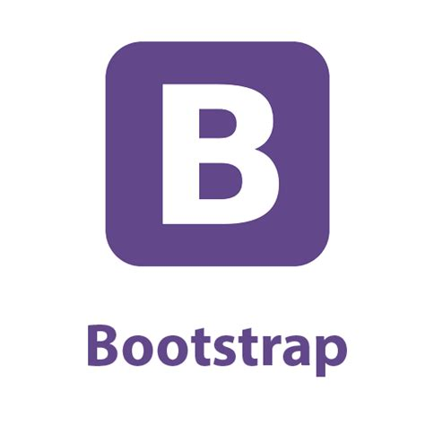
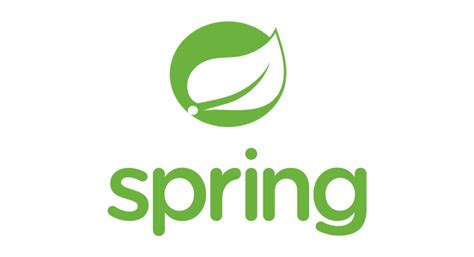
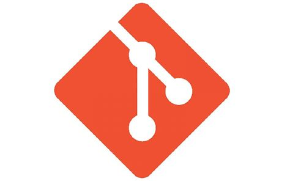
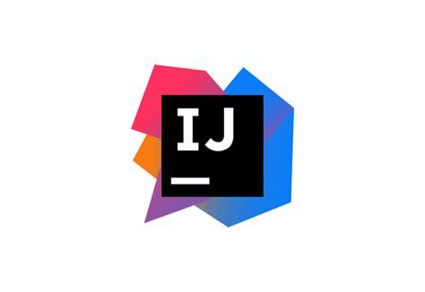
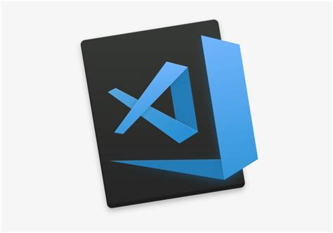

Java
Nació bajo la intención de ser un lenguaje de programación sencillo que pudiera ser compatible con todos los sistemas operativos existentes. A partir de esta necesidad, Java se utiliza a fin de crear diferentes aplicaciones en varios dispositivos que permitan ejecutar este código en sistemas remotos de una forma segura, siendo compatible tanto con móviles como ordenadores portátiles. Ha evolucionado desde sus humildes comienzos hasta impulsar una gran parte del mundo digital actual. Los nuevos e innovadores productos y servicios digitales diseñados para el futuro se basan en Java.

Python
Es un lenguaje de programación, multiparadigma y multinivel, con soporte en programación orientada a objetos, imperativa y funcional. Se pueden crear aplicaciones nativas e híbridas, y cuenta con una sintaxis accesible. Es imprescindible en plataformas de entretenimiento y social media, destinado al aprendizaje automático y a la construcción de algoritmos de recomendación, por eso aplicaciones como Instagram, Pinterest, Dropbox, Facebook, Spotify y Netflix tienen este lenguaje en su desarrollo porque permite programar tareas con el objetivo de procesar grandes cantidades datos y obtener información de valor.
Html
HTML es el acrónimo en inglés de HyperText Markup Language (en español se traduce como lenguaje de marcado de hipertexto). Es un lenguaje abstracto que usan las aplicaciones para representar documentos (se les llama documentos a instancias completas, como lo son las páginas web) y que puede ser transmitido fácilmente por algún medio, como Internet. Los navegadores de Internet procesan e interpretan documentos descritos en HTML usando un analizador de HTML.

Css
Cascading Style Sheets (CSS) es un lenguaje de programación que sirve para determinar el diseño de los documentos electrónicos. Con la ayuda de unas sencillas instrucciones -presentadas en forma de código fuente claro-, los elementos del sitio web, como el diseño, el color y la tipografía, pueden adaptarse como se desee. Gracias a las hojas de estilo en cascada, la estructura semántica y el contenido del documento no se ven afectados. CSS surgió a mediados de la década de 1990 y ahora se considera el lenguaje de hojas de estilo estándar en Internet.

Bootstrap
Es un framework de desarrollo web gratuito y de código abierto. Está diseñado para facilitar el proceso de desarrollo de los sitios web responsivos y orientados a los dispositivos móviles, proporcionando una colección de sintaxis para diseños de plantillas. En otras palabras, Bootstrap ayuda a los desarrolladores a construir sitios web más rápidamente, ya que no tienen que preocuparse por los comandos y funciones básicos.

MySQL
Es un sistema de gestión de bases de datos relacionales de código abierto (RDBMS, por sus siglas en inglés) con un modelo cliente-servidor. RDBMS es un software o servicio utilizado para crear y administrar bases de datos basadas en un modelo relacional. Una base de datos es un lugar en el que los datos son almacenados y organizados. La palabra «relacional» significa que los datos almacenados en el conjunto de datos son organizados en forma de tablas. Cada tabla se relaciona de alguna manera. Si el software no es compatible con el modelo de datos relacionales, simplemente se llama DBMS.

Spring
Debido al aumento de la complejidad que presentan la mayoría de los sistemas web, tanto en temas de seguridad, funcionalidad y gráficas, la comunidad de desarrolladores se vio en la necesidad de diseñar ciertas ayudas, a fin de no tener que repetir código, reduciendo de este modo el tiempo y el espacio para el desarrollo de aplicaciones. Ofrece como elemento clave el soporte de infraestructura a nivel de aplicación, brindando un completo modelo tanto para la configuración como para la programación de aplicaciones empresariales desarrolladas bajo Java, sin discriminación en cuanto al despliegue de la plataforma.
Django
Es un framework web de alto nivel que permite el desarrollo rápido de sitios web seguros y mantenibles. Desarrollado por programadores experimentados, Django se encarga de gran parte de las complicaciones del desarrollo web, por lo que puedes concentrarte en escribir tu aplicación sin necesidad de reinventar la rueda. Puede ser (y ha sido) usado para construir casi cualquier tipo de sitio web — desde sistemas manejadores de contenidos y wikis, hasta redes sociales y sitios de noticias. Puede funcionar con cualquier framework en el lado del cliente, y puede devolver contenido en casi cualquier formato (incluyendo HTML, RSS feeds, JSON, XML, etc).

Git
Es el sistema de control de versiones moderno más utilizado del mundo. Git es un proyecto de código abierto maduro y con un mantenimiento activo que desarrolló originalmente Linus Torvalds, el famoso creador del kernel del sistema operativo Linux, en 2005. Un asombroso número de proyectos de software dependen de Git para el control de versiones, incluidos proyectos comerciales y de código abierto. Presenta una arquitectura distribuida, es un ejemplo de DVCS (sistema de control de versiones distribuido, por sus siglas en inglés). Además de contar con una arquitectura distribuida, Git se ha diseñado teniendo en cuenta el rendimiento, la seguridad y la flexibilidad.
GitHub
Es una herramienta esencial para los ingenieros de software, y su popularidad es inigualable. En resumen, GitHub es un servicio basado en la nube que aloja un sistema de control de versiones (VCS) llamado Git. Éste permite a los desarrolladores colaborar y realizar cambios en proyectos compartidos, a la vez que mantienen un seguimiento detallado de su progreso. Actualmente cuenta con más de 25 millones de usuarios. Se trata de un número considerable de profesionales que recurren a GitHub para mejorar el flujo de trabajo y la colaboración.

IntelliJ
Es un “Entorno de Desarrollo Integral” (IDE) para Java, diseñado para ayudar a desarrolladores, es funcional y para que te enfoques en tu código. Puede implementar interfaces, crear métodos para que puedas cambiar el nombre de cualquier cosa a medida que codificas, puede extraer variables, métodos, campos, etc., te ofrecen soluciones rápidas donde las necesitas y puede usar terminación básica inteligente al momento de escribir.

Visual Studio Code
Es un editor de código fuente desarrollado por Microsoft. Es software libre y multiplataforma, está disponible para Windows, GNU/Linux y macOS. Visual Studio Code (VS Code) tiene una buena integración con Git, cuenta con soporte para depuración de código, y dispone de un sinnúmero de extensiones, que básicamente te da la posibilidad de escribir y ejecutar código en cualquier lenguaje de programación.